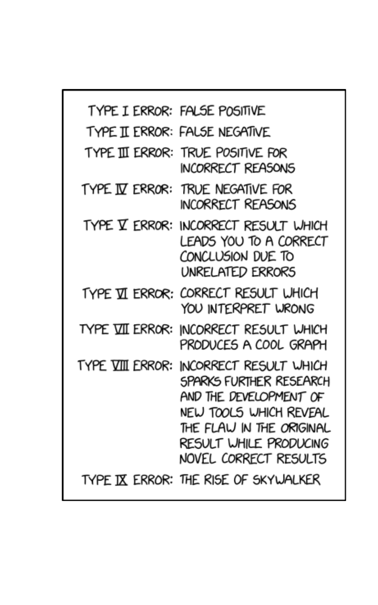
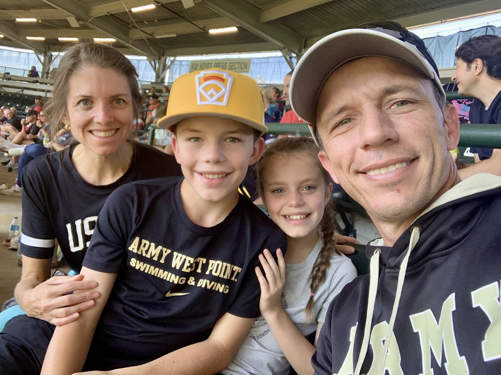
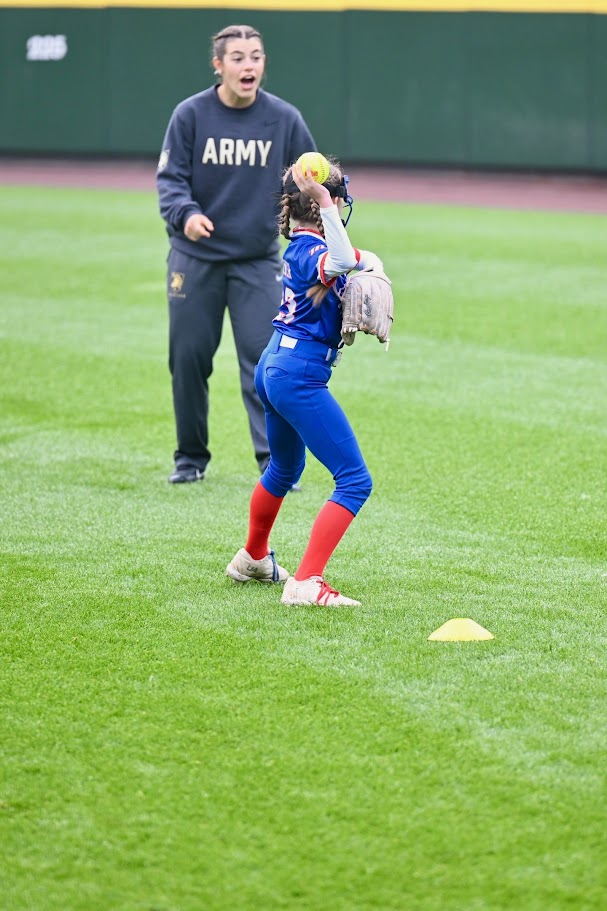
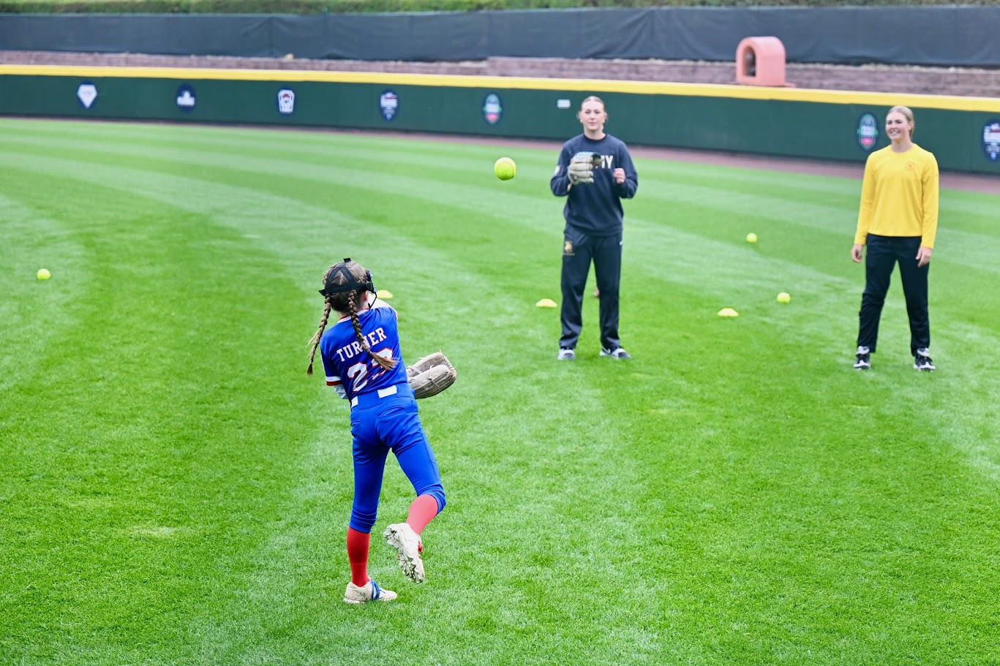
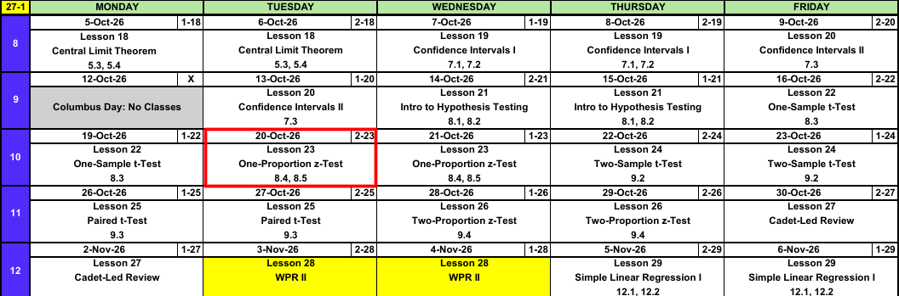
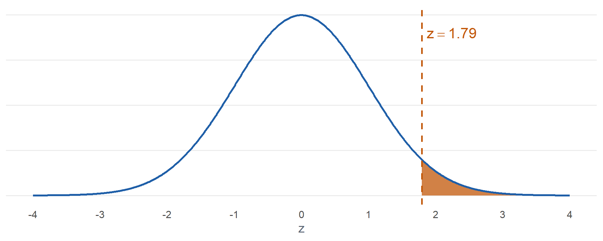
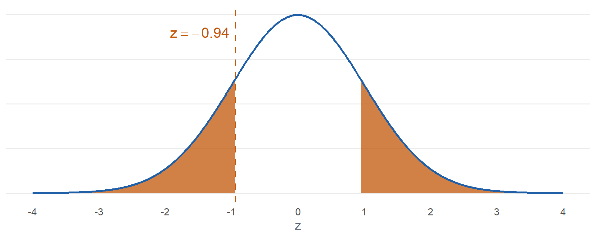
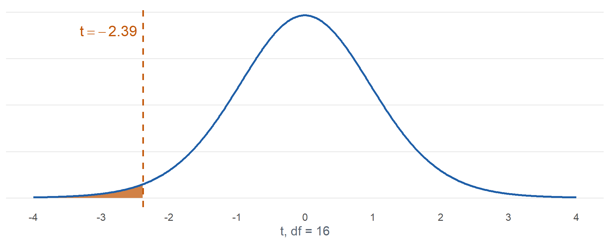

Lesson 23: One-Proportion z-Test
Break!




Calendar

What We Did: Lessons 18 to 22
NoteReview: Central Limit Theorem (Lesson 18)
- \(\bar{X} \sim N\left(\mu,\ \left(\dfrac{\sigma}{\sqrt{n}}\right)^2\right)\), approximately, for \(n > 40\)
- Normal population: exact for any \(n\)
pnorm(x, mu, sigma/sqrt(n))- \(\hat{p} \sim N\left(p,\ \dfrac{p(1-p)}{n}\right)\), approximately, when \(np \ge 10\) and \(n(1-p) \ge 10\)
NoteReview: Confidence Intervals I (Lesson 19)
- \(\text{estimate} \pm \text{critical value} \times \text{standard error}\)
- Mean, \(n > 40\): \(\bar{x} \pm z_{\alpha/2}\,\dfrac{s}{\sqrt{n}}\)
- Proportion, \(n\hat{p} \ge 10\) and \(n(1-\hat{p}) \ge 10\): \(\hat{p} \pm z_{\alpha/2}\sqrt{\dfrac{\hat{p}(1-\hat{p})}{n}}\)
qnorm(0.975)for 95%,qnorm(0.95)for 90%,qnorm(0.995)for 99%- 95% confident describes the method
NoteReview: Confidence Intervals II (Lesson 20)
- Small sample, normal population: \(\bar{x} \pm t_{\alpha/2,\,n-1}\,\dfrac{s}{\sqrt{n}}\)
- \(\text{df} = n - 1\),
qt(0.975, n - 1)for 95% - \(t_{\alpha/2,\,n-1} > z_{\alpha/2}\), so the \(t\) interval is wider
- Sample size for width \(w\): \(n = \left(\dfrac{2\,z_{\alpha/2}\,\sigma}{w}\right)^2\), rounded up
NoteReview: Intro to Hypothesis Testing (Lesson 21)
- \(H_0: \mu = \mu_0\) versus \(H_a\): \(\mu < \mu_0\), \(\mu > \mu_0\), or \(\mu \ne \mu_0\)
- \(z = \dfrac{\bar{x} - \mu_0}{s/\sqrt{n}}\), random sample, \(n > 40\)
- P-value:
pnorm(z),1 - pnorm(z),2 * pnorm(-abs(z)) - Reject \(H_0\) if the P-value is at or below \(\alpha\), otherwise fail to reject
- Type I: reject a true \(H_0\) (\(\alpha\)). Type II: fail to reject a false \(H_0\) (\(\beta\))
- Fail to reject is not accept
NoteReview: One-Sample t-Test (Lesson 22)
- \(t = \dfrac{\bar{x} - \mu_0}{s/\sqrt{n}}\), \(\text{df} = n - 1\)
- Random sample, \(n \le 40\), population approximately normal
- P-value:
pt(t, n - 1),1 - pt(t, n - 1),2 * pt(-abs(t), n - 1) t.test(x, mu = mu0, alternative = "two.sided")
What We’re Doing: Lesson 23
Objectives
- Check the large-sample conditions for inference on a proportion. (SLO 5)
- Carry out a large-sample \(z\) test for a population proportion. (SLO 5)
- Distinguish statistical significance from practical significance. (SLO 6)
Required Reading
Devore 8.4, 8.5
The Takeaway for Today
NoteKey Concepts from Lesson 23
- Test statistic: \(z = \dfrac{\hat{p} - p_0}{\sqrt{p_0(1 - p_0)/n}}\)
- Conditions: random sample, \(np_0 \ge 10\) and \(n(1 - p_0) \ge 10\)
- P-value:
pnorm(z),1 - pnorm(z), or2 * pnorm(-abs(z)) - Statistically significant is not the same as practically significant: with a large \(n\), a tiny difference rejects
Warm-Up
Corps Squad
The Corps is told \(25\%\) of cadets are on a corps squad team. In a random sample of \(150\) cadets, \(48\) are on a corps squad team.
If \(p = 0.25\) is true, what is the distribution of \(\hat{p}\)?
TipAnswer
\(150(0.25) = 37.5 \ge 10\) and \(150(0.75) = 112.5 \ge 10\).
\[\hat{p} \sim N\left(0.25,\ \frac{0.25(0.75)}{150}\right), \qquad \text{SE} = \sqrt{\frac{0.25(0.75)}{150}} = 0.0354\]
Where does \(\hat{p} = 48/150 = 0.32\) fall?
TipAnswer

\[z = \frac{0.32 - 0.25}{0.0354} = 1.98\]
About two standard errors above \(0.25\). Unusual if \(p = 0.25\).
This is the test from the end of last lesson.
One-Proportion \(z\) Test
ImportantOne-Proportion \(z\) Test
\[z = \frac{\hat{p} - p_0}{\sqrt{\dfrac{p_0(1 - p_0)}{n}}}\]
- Hypotheses: \(H_0: p = p_0\) versus \(H_a\): \(p > p_0\), \(p < p_0\), or \(p \ne p_0\)
- Conditions: random sample, \(np_0 \ge 10\) and \(n(1 - p_0) \ge 10\)
- If \(H_0\) is true, \(Z \sim N(0, 1)\), approximately
| \(H_a\) | P-value |
|---|---|
| \(p > p_0\) | 1 - pnorm(z) |
| \(p < p_0\) | pnorm(z) |
| \(p \ne p_0\) | 2 * pnorm(-abs(z)) |
WarningThe Test Uses \(p_0\), the Interval Uses \(\hat{p}\)
- Test: we assume \(H_0\) is true, so the standard error and the conditions use \(p_0\)
- Interval: there is no null value, so the standard error and the conditions use \(\hat{p}\)
The Steps
NoteHypothesis Test Steps
- Hypotheses: \(H_0\) and \(H_a\), in terms of the parameter
- Conditions
- Test statistic
- P-value
- Decision: reject \(H_0\) if the P-value is at or below \(\alpha\), otherwise fail to reject
- Conclusion in context
Land Nav
Historically \(70\%\) of cadets pass land navigation on the first attempt. CST tried a new pre-course block. In a random sample of \(120\) cadets, \(93\) passed on the first attempt. Test at \(\alpha = 0.05\).
1. Hypotheses: State \(H_0\) and \(H_a\).
TipAnswer
\[H_0: p = 0.70\]
\[H_a: p > 0.70\]
\(p\) is the true proportion of all cadets who pass land navigation on the first attempt with the new block.
2. Conditions: What conditions allow us to do this?
TipAnswer
Random sample. \(np_0 = 120(0.70) = 84 \ge 10\) and \(n(1 - p_0) = 120(0.30) = 36 \ge 10\).
3. Test statistic: Compute it.
TipAnswer
\[\hat{p} = \frac{93}{120} = 0.775\]
\[z = \frac{\hat{p} - p_0}{\sqrt{p_0(1 - p_0)/n}}\]
\[z = \frac{0.775 - 0.70}{\sqrt{0.70(0.30)/120}} = \mathbf{1.79}\]
4. P-value: Find it.
TipAnswer

\[P(Z \ge 1.79) = \mathbf{0.0365}\]
1 - pnorm(1.793)
5. Decision: Reject or fail to reject?
TipAnswer
\(0.0365 \le 0.05\). Reject \(H_0\).
6. Conclusion: State it in context.
TipAnswer
Since the P-value \(0.0365 \le \alpha = 0.05\), reject \(H_0\). At the 5% level there is sufficient evidence that the true proportion of all cadets who pass land navigation on the first attempt with the new block is greater than 0.70.
Lefties
About \(10\%\) of people are left-handed. Is the Corps different? In a random sample of \(200\) cadets, \(16\) are left-handed. Test at \(\alpha = 0.05\).
1. Hypotheses: State \(H_0\) and \(H_a\).
TipAnswer
\[H_0: p = 0.10\]
\[H_a: p \ne 0.10\]
\(p\) is the true proportion of all cadets who are left-handed.
2. Conditions: What conditions allow us to do this?
TipAnswer
Random sample. \(np_0 = 200(0.10) = 20 \ge 10\) and \(n(1 - p_0) = 200(0.90) = 180 \ge 10\).
3. Test statistic: Compute it.
TipAnswer
\[\hat{p} = \frac{16}{200} = 0.08\]
\[z = \frac{\hat{p} - p_0}{\sqrt{p_0(1 - p_0)/n}}\]
\[z = \frac{0.08 - 0.10}{\sqrt{0.10(0.90)/200}} = \mathbf{-0.94}\]
4. P-value: Find it.
TipAnswer

\[2\,P(Z \ge \lvert -0.94 \rvert) = \mathbf{0.3458}\]
2 * pnorm(-abs(-0.943))
5. Decision: Reject or fail to reject?
TipAnswer
\(0.3458 > 0.05\). Fail to reject \(H_0\).
6. Conclusion: State it in context.
TipAnswer
Since the P-value \(0.3458 > \alpha = 0.05\), fail to reject \(H_0\). At the 5% level there is insufficient evidence that the true proportion of all cadets who are left-handed differs from 0.10.
In R
1-sample proportions test without continuity correction
data: 93 out of 120, null probability 0.7
X-squared = 3.2143, df = 1, p-value = 0.0365
alternative hypothesis: true p is greater than 0.7
95 percent confidence interval:
0.7066342 1.0000000
sample estimates:
p
0.775 correct = FALSEmatches the hand calculationX-squaredis \(z^2\): \(1.79^2 = 3.214\)- Same P-value
Statistical vs. Practical Significance
ACFT Pass Rate
The Army’s first-time ACFT pass rate has been \(90\%\). After a new training program, every sample below shows \(\hat{p} = 0.905\). Test \(H_0: p = 0.90\) versus \(H_a: p > 0.90\) at \(\alpha = 0.05\).
What happens as \(n\) grows?
TipAnswer
| \(n\) | \(\hat{p}\) | \(z\) | P-value | Decision |
|---|---|---|---|---|
| 500 | 0.905 | 0.37 | 0.3547 | Fail to reject |
| 5,000 | 0.905 | 1.18 | 0.1193 | Fail to reject |
| 50,000 | 0.905 | 3.73 | 0.0001 | Reject |
Same half a percentage point every time. Only \(n\) changed.
Does the commander care?
TipAnswer
Probably not. At \(n = 50{,}000\) the 95% interval is
\[0.905 \pm 1.96\sqrt{\frac{0.905(0.095)}{50000}} = (0.9024,\ 0.9076)\]
The program adds well under one percentage point. Real, but too small to matter.
ImportantStatistical vs. Practical Significance
- Statistically significant: the P-value is at or below \(\alpha\). The difference is probably not chance.
- Practically significant: the difference is large enough to matter in context.
- With a large enough \(n\), any difference from \(p_0\) is statistically significant.
- A small P-value does not mean a big effect. Look at \(\hat{p}\) or the interval to judge size.
- The same holds for tests about \(\mu\).
Look Ahead: Comparing Two Means
What happens if we want to compare means?
New Run Program
CST randomly assigns \(22\) cadets to two groups. \(12\) train with a new run program and \(10\) train with the standard program. Does the new program lower the mean 2 mile run time? Test at \(\alpha = 0.05\).
| Group | \(n\) | \(\bar{x}\) (min) | \(s\) (min) |
|---|---|---|---|
| 1: New | 12 | 14.8 | 1.1 |
| 2: Standard | 10 | 16.1 | 1.4 |
1. Hypotheses
\[H_0: \mu_1 - \mu_2 = 0\]
\[H_a: \mu_1 - \mu_2 < 0\]
\(\mu_1\) and \(\mu_2\) are the true mean 2 mile run times of all cadets on the new and standard programs.
2. Conditions
Two independent random samples. Both samples are small, so both populations must be approximately normal.
3. Test statistic
\[t = \frac{(\bar{x}_1 - \bar{x}_2) - 0}{\sqrt{\dfrac{s_1^2}{n_1} + \dfrac{s_2^2}{n_2}}} = \frac{14.8 - 16.1}{\sqrt{\dfrac{1.1^2}{12} + \dfrac{1.4^2}{10}}} = \mathbf{-2.39}\]
\[\nu = \frac{\left(\dfrac{s_1^2}{n_1} + \dfrac{s_2^2}{n_2}\right)^2}{\dfrac{(s_1^2/n_1)^2}{n_1 - 1} + \dfrac{(s_2^2/n_2)^2}{n_2 - 1}} = 16.97, \text{ round down to } 16\]
4. P-value

\[P(T \le -2.39) = \mathbf{0.0149}\]
pt(-2.386, 16)
5. Decision
\(0.0149 \le 0.05\). Reject \(H_0\).
6. Conclusion
Since the P-value \(0.0149 \le \alpha = 0.05\), reject \(H_0\). At the 5% level there is sufficient evidence that the true mean 2 mile run time of cadets on the new program is less than that of cadets on the standard program.
Same six steps. New parameter, new standard error, new degrees of freedom. Lesson 24.
Inference Procedures
| Parameter | Conditions | Test statistic | Confidence interval | Critical value | P-value by \(H_a\) |
|---|---|---|---|---|---|
| \(\mu\) \(\sigma\) known, or \(\sigma\) unknown and \(n > 40\) |
Random sample \(\sigma\) known and population normal, or \(n > 40\) |
\(z = \dfrac{\bar{x} - \mu_0}{\sigma/\sqrt{n}}\) use \(s\) for \(\sigma\) when \(n > 40\) |
\(\bar{x} \pm z_{\alpha/2}\dfrac{\sigma}{\sqrt{n}}\) | qnorm(1-a/2) |
\(>\) 1-pnorm(z)\(<\) pnorm(z)\(\ne\) 2*pnorm(-abs(z)) |
| \(\mu\) \(\sigma\) unknown, \(n \le 40\) |
Random sample Population approx. normal |
\(t = \dfrac{\bar{x} - \mu_0}{s/\sqrt{n}} \sim t_{n-1}\) | \(\bar{x} \pm t_{\alpha/2,\,n-1}\dfrac{s}{\sqrt{n}}\) | qt(1-a/2,n-1) |
\(>\) 1-pt(t,n-1)\(<\) pt(t,n-1)\(\ne\) 2*pt(-abs(t),n-1) |
| \(p\) | Random sample \(np_0 \ge 10\) \(n(1-p_0) \ge 10\) |
\(z = \dfrac{\hat{p} - p_0}{\sqrt{p_0(1-p_0)/n}}\) the test uses \(p_0\) |
\(\hat{p} \pm z_{\alpha/2}\sqrt{\dfrac{\hat{p}(1-\hat{p})}{n}}\) the interval uses \(\hat{p}\) |
qnorm(1-a/2) |
\(>\) 1-pnorm(z)\(<\) pnorm(z)\(\ne\) 2*pnorm(-abs(z)) |
| \(\mu_1 - \mu_2\) independent |
Two independent samples Both normal, or both \(n > 40\) |
\(t = \dfrac{(\bar{x}_1 - \bar{x}_2) - \Delta_0}{\sqrt{s_1^2/n_1 + s_2^2/n_2}} \sim t_{\nu}\) | \((\bar{x}_1 - \bar{x}_2) \pm t_{\alpha/2,\,\nu}\sqrt{\dfrac{s_1^2}{n_1}+\dfrac{s_2^2}{n_2}}\) | qt(1-a/2,nu) |
\(>\) 1-pt(t,nu)\(<\) pt(t,nu)\(\ne\) 2*pt(-abs(t),nu) |
| \(\mu_D\) paired |
Random sample of matched pairs, \(n_1 = n_2\) Differences approx. normal when \(n \le 40\) |
\(t = \dfrac{\bar{d} - \Delta_0}{s_D/\sqrt{n}} \sim t_{n-1}\) on the differences \(d_i = x_i - y_i\) |
\(\bar{d} \pm t_{\alpha/2,\,n-1}\dfrac{s_D}{\sqrt{n}}\) | qt(1-a/2,n-1) |
\(>\) 1-pt(t,n-1)\(<\) pt(t,n-1)\(\ne\) 2*pt(-abs(t),n-1) |
| \(p_1 - p_2\) | Two independent samples \(n_i\hat{p}_i \ge 10\) \(n_i(1-\hat{p}_i) \ge 10\) |
\(z = \dfrac{\hat{p}_1 - \hat{p}_2}{\sqrt{\hat{p}(1-\hat{p})\left(\frac{1}{n_1}+\frac{1}{n_2}\right)}}\) pooled \(\hat{p} = \dfrac{x_1+x_2}{n_1+n_2}\) |
\((\hat{p}_1 - \hat{p}_2) \pm z_{\alpha/2}\sqrt{\dfrac{\hat{p}_1(1-\hat{p}_1)}{n_1}+\dfrac{\hat{p}_2(1-\hat{p}_2)}{n_2}}\) not pooled |
qnorm(1-a/2) |
\(>\) 1-pnorm(z)\(<\) pnorm(z)\(\ne\) 2*pnorm(-abs(z)) |
Board Problems
Problem 1: Can We Use the \(z\) Test?
NoteQuestions
For each, can we use the one-proportion \(z\) test? If not, why not?
A random sample of \(40\) cadets, testing \(H_0: p = 0.20\).
A random sample of \(200\) cadets, testing \(H_0: p = 0.05\).
A random sample of \(60\) cadets, testing \(H_0: p = 0.50\).
The first \(300\) cadets through the gym door on a Saturday, testing \(H_0: p = 0.40\).
TipAnswers
No. \(np_0 = 40(0.20) = 8 < 10\).
Yes. \(np_0 = 200(0.05) = 10 \ge 10\) and \(n(1 - p_0) = 190 \ge 10\).
Yes. \(np_0 = n(1 - p_0) = 30 \ge 10\).
No. Not a random sample. Saturday gym goers are not representative of the Corps.
Problem 2: Night Vision Goggles
The contract allows \(5\%\) of night vision goggles to arrive defective. The S4 thinks the defect rate is higher. In a random sample of \(300\) goggles, \(24\) are defective. Test at \(\alpha = 0.01\).
NoteQuestions
State the hypotheses.
Check the conditions.
Compute the test statistic.
State the rejection region. Is \(z\) in it?
Find the P-value.
Decide and conclude.
TipAnswers
- \[H_0: p = 0.05\]
\[H_a: p > 0.05\]
\(p\) is the true proportion of all delivered goggles that are defective.
Random sample. \(np_0 = 300(0.05) = 15 \ge 10\) and \(n(1 - p_0) = 285 \ge 10\).
\[\hat{p} = \frac{24}{300} = 0.08\]
\[z = \frac{\hat{p} - p_0}{\sqrt{p_0(1 - p_0)/n}}\]
\[z = \frac{0.08 - 0.05}{\sqrt{0.05(0.95)/300}} = \mathbf{2.38}\]
Reject \(H_0\) if \(z \ge 2.326\).
qnorm(0.99). Yes, \(2.38 \ge 2.326\).\[P(Z \ge 2.38) = \mathbf{0.0086}\]
1 - pnorm(2.384)
- Since the P-value \(0.0086 \le \alpha = 0.01\), reject \(H_0\). At the 1% level there is sufficient evidence that the true proportion of all delivered goggles that are defective is greater than 0.05.
Problem 3: Coin Toss
Over \(120\) home football games, the visiting captain called the coin toss correctly \(52\) times. Is the call different from a fair \(50\%\)? Test at \(\alpha = 0.05\).
NoteQuestions
State the hypotheses.
Check the conditions.
Compute the test statistic and P-value.
Decide and conclude.
Does this prove the call is a fair \(50\%\)?
TipAnswers
- \[H_0: p = 0.50\]
\[H_a: p \ne 0.50\]
\(p\) is the true proportion of coin tosses the visiting captain calls correctly.
Treat the games as a random sample. \(np_0 = n(1 - p_0) = 60 \ge 10\).
\[\hat{p} = \frac{52}{120} = 0.4333\]
\[z = \frac{0.4333 - 0.50}{\sqrt{0.50(0.50)/120}} = \mathbf{-1.46}\]
\[2\,P(Z \ge \lvert -1.46 \rvert) = \mathbf{0.1441}\]
2 * pnorm(-abs(-1.461))
Since the P-value \(0.1441 > \alpha = 0.05\), fail to reject \(H_0\). At the 5% level there is insufficient evidence that the true proportion of coin tosses the visiting captain calls correctly differs from 0.50.
No. Fail to reject is not accept. The data are consistent with \(0.50\), but also with other values near \(0.43\).
Problem 4: Two Sleep Studies
Currently \(30\%\) of cadets sleep \(7\) or more hours a night. Two studies test a new sleep program, each with \(H_a: p > 0.30\) at \(\alpha = 0.05\).
- Study A: random sample of \(20{,}000\) cadets, \(6{,}200\) sleep \(7\) or more hours
- Study B: random sample of \(50\) cadets, \(20\) sleep \(7\) or more hours
NoteQuestions
Find \(\hat{p}\), \(z\), and the P-value for each study.
Which study is statistically significant?
Which study shows the bigger improvement?
What would you tell the Commandant about each?
TipAnswers
- Study A: \(\hat{p} = 0.31\)
\[z = \frac{0.31 - 0.30}{\sqrt{0.30(0.70)/20000}} = \mathbf{3.09}, \qquad P(Z \ge 3.09) = \mathbf{0.0010}\]
Study B: \(\hat{p} = 0.40\). Conditions: \(50(0.30) = 15 \ge 10\), \(50(0.70) = 35 \ge 10\).
\[z = \frac{0.40 - 0.30}{\sqrt{0.30(0.70)/50}} = \mathbf{1.54}, \qquad P(Z \ge 1.54) = \mathbf{0.0614}\]
Study A rejects \(H_0\). Study B fails to reject.
Study B: \(10\) percentage points versus \(1\).
Study A: the improvement is real but only one percentage point, statistically significant but probably not practically significant. Study B: a promising improvement, but \(n = 50\) is too small to rule out chance. Run a larger study.
Before You Leave
Today
- \(z = \dfrac{\hat{p} - p_0}{\sqrt{p_0(1 - p_0)/n}}\)
- Random sample, \(np_0 \ge 10\) and \(n(1 - p_0) \ge 10\)
- P-value:
pnorm(z),1 - pnorm(z),2 * pnorm(-abs(z)) - Statistically significant does not mean practically significant
Any questions?
Next Lesson
Lesson 24: Two-Sample t-Test
- Distinguish independent-sample from paired designs
- Carry out the two-sample \(t\) test for \(\mu_1 - \mu_2\) using the approximate degrees of freedom
- Construct and interpret a confidence interval for \(\mu_1 - \mu_2\)
Reading: Devore 9.2
Upcoming Graded Events
- WebAssign 8.4: due at the start of Lesson 24
- WPR II: Lesson 28 (covers Lessons 18-26)
- TEE: 15-18 Dec 2026